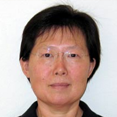

Meet the Team

Lan Wang
Lead Primary Investigator
Department Chair & Professor in Computer Science, University of Memphis
Lan Wang joined the Computer Science Department at the University of Memphis in Fall 2004 after finishing her PhD at UCLA and became the department chair in 2016. Her research focuses on improving the scalability, reliability, and security of the Internet. She has received multiple major research grants from NSF, NIST, and DoD as well as several grants from the university. Most recently, she is on a team that received over $15 million from NSF for their "Named Data Networking" project. As an active member of the research community, she has served on the program committee of more than 50 conferences and workshops. She is also interested in promoting female participation in computer science, co-organizing a "Networking Networking Women" panel at ACM SIGCOMM 2008 and an N2Women dinner at ACM SIGCOMM 2019. She started and has been advising the Women in Computing student chapter at the university. Dr. Wang is an IEEE Senior Member. She received the 2010 Early Career Research Award from the College of Arts and Sciences at the University of Memphis and 2019 Alumni Association Distinguished Research Award in Science, Engineering, and Mathematics from the University of Memphis.

Santosh Kumar
Co-Primary Investigator
Director, MD2K Center of Excellence;
Professor & Lillian and Morrie Moss Chair of Excellence in Computer Science, University of Memphis
Santosh Kumar is the Lillian and Morrie Moss Chair of Excellence Professor in the Department of Computer Science at the University of Memphis. Santosh has been leading large multidisciplinary mobile health (mHealth) projects since 2007, sponsored by NSF and NIH. He is currently leading an NIH Center of Excellence on Mobile Sensor Data-to-Knowledge (MD2K), a truly transdisciplinary project in which Santosh leads a team of 20+ investigators from 12 universities who come from diverse but complementary disciplines including computer science, engineering, statistics, public health, medicine, and behavioral science. His work has led to the development of novel sensor-derived mHealth biomarkers such as stress, conversation, smoking, craving, cocaine use, brushing, and flossing. In addition to direct experience with leading transdisciplinary mobile sensor research projects, Santosh has led national efforts to advance the field of mHealth. He has chaired national meetings on mHealth Evidence and on identifying computing grand challenges in mHealth.
Lixia Zhang
Co-Primary Investigator
Jonathan B. Postel Professor of Computer Science, University of California, Los Angeles (UCLA)
Lixia Zhang is a professor in the Computer Science Department of UCLA. She received Ph.D in computer science from MIT and was a member of the research staff at Xerox PARC. Dr. Zhang joined the faculty of UCLA Computer Science Department in 1995. Her research at UCLA started with Adaptive Web Caching (AWC), the design of a global scale web caching system funded by DARPA, and the Internet Distance Map Service funded by NSF. From 1998 to 2010 much of her group's research focus was on the resiliency and security issues in the global routing system and Domain Name System (DNS), and the system challenges in deploying cryptographic protections in global scale open systems such as the Internet. Her group developed several useful tools that got widely used by the Internet research and operational communities. Dr. Zhang coined the term "middlebox" to refer to a computer networking device that performs functions other than that of a regular Internet protocol router. Examples of middleboxes include firewalls and network address translators. Her term has been widely adopted by the industry. Since 2010, she has been leading a multi-campus research project on the development of a new Internet architecture called Named Data Networking (NDN) funded by NSF.

Nasir Ali
Research Assistant Professor, University of Memphis
Nasir Ali is an assistant research professor at the University of Memphis. Prior to joining University of Memphis, he worked as a Postdoctoral fellow at University of Waterloo and Queens University (Canada). Dr. Ali received his Ph.D. from Ecole polytechnique de Montreal. His research interests include software maintenance, software quality, and mining large software repositories. His current work involves developing tools/algorithms to analyze mobile sensor data, including architecting and developing the MD2K cloud platform (called Cerebral Cortex) to collect and process the center's data.
Students
Saurab Dulal
University of Memphis
Saurab Dulal is a graduate Research Assistant at the University of Memphis. A proponent of distributed internet, computer engineer, and a graduate research assistant at NetLab, Saurab has functional and technical expertise in Information-Centric Networking (especially, NDN) and computer networking. He also has years of experience with Oracle Retail Suite, Teradata, and MicroStrategy. Additionally, Saurab has volunteered for Dr. Mahabir Pun who is a Ramon Magsaysay winner in his various social initiatives such as National Innovation Center, Nepal Wireless Project, and Trail Guard System. Saurab has also worked as a teaching assistant for Java programming as well as Network and Information Assurance.
Tianyuan Yu, Siqi (Tyler) Liu
University of California, Los Angeles (UCLA)
Adam Robert Thieme
University of Memphis
Suravi Regmi
University of Memphis
Former Students
Muktadir Chowdhury
University of Memphis
Muktadir Chowdhury is a graduate researcher in the Department of Computer Science at the University of Memphis. His research focus is on Information-Centric Networking. Since the beginning of his graduate study, Muktadir has been actively involved in the open-source ICN project Named-Data Networking (NDN). He has been a developer, reviewer, and issue/bug reporter of various NDN related projects. Muktadir's own research is focused on Vehicular ad-hoc Networking over NDN. He is also experienced in the research of DPDK (DataPlane Development Kit)-based user-space TCP/IP stack.
Laqin Fan
University of Memphis
Laqin Fan is a Research Assistant at the University of Memphis. Laqin's work includes Named Data Networking, solving redmine issues, implementing programs and evaluating results. Her research includes access control and bootstrapping protocols for IoT over NDN in Smart Home systems, and she is involved inwriting research papers for publications based on experiments results and analysis. Laqin has also worked as a teaching assistant, including implementing tools to help grading student assignments, as well as supervising roles in Java practice in the student lab, advising on skills, methods and techniques.
Zhiyi Zhang
University of California, Los Angeles (UCLA)
Zhiyi Zhang is a Ph.D. candidate of Computer Science at UCLA under the supervision of Prof. Lixia Zhang. Zhiyi is a doctoral researcher in the Internet Research Laboratory (IRL). Main research interests include security and privacy enhancement in network system, distributed system, and data engineering. Now an active researcher on Named Data Networking (NDN), Zhiyi's ongoing research projects are smart home IoT system with localized and designed-in security, Privacy-preserving Single SignOn protocol, Reliable Leaker Identification in Personally Identifiable Information (PII) Sharing, and Graph-based Permissioned Distributed Ledger. Previous work done in security includes Name-based Access Control over NDN, NDN Certificate Management and DDoS Defense over NDN. Zhiyi is also contributing to the development of the core NDN softwares, including NDN Forwarding Daemon (NFD) and ndn-cxx library. Zhiyi received a Bachelor of Engineering in Software Engineering from Nankai University, China, in 2016.